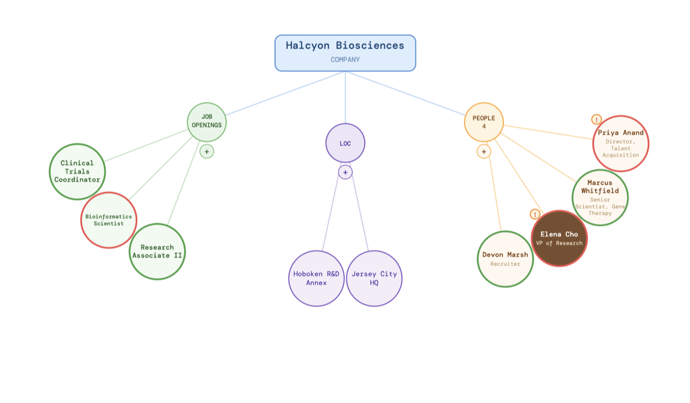

Outreach Graph: A Visual Map for a Job Search
Motivation
A few weeks into outreach, I had companies tracked in one tab, contacts in another, and applications in a third — and no single view of which relationships actually needed attention that day. The information itself wasn't complicated: a company has jobs, jobs have locations, and people sit somewhere in between. What was missing was a layout that made the structure visible at a glance, and that surfaced who I'd gone quiet on.
Approach
The app is a React + TypeScript front end built with Vite. Each company renders as a radial diagram: a central hub node with spokes branching out to job, location, and contact "leaves." A few implementation details mattered more than expected:

- Custom layout, not a graph library. Node positions, spoke angles, and leaf radii are computed directly (
spokePositions,buildInitialPositions) rather than handed to a force-directed layout engine — which keeps the diagram stable and readable instead of drifting every time data changes. - Text-aware sizing. A
computeLeafLayouthelper shrinks a leaf's font size to fit its label before growing the circle itself, so a long company or contact name doesn't break the diagram. - Staleness as a first-class signal. A
needsAlertcheck flags any contact who hasn't been followed up with in more than five days, rendering their node with a red rim instead of green — the graph doubles as a to-do list. - Local persistence. Edits are diffed against the last saved snapshot (
hasUnsavedChanges) and written back through a small/save-dataendpoint, so the dataset is just a JSON file rather than a database.
It also folds in resume and cover-letter generation, building .docx output directly from the same company/role data instead of re-typing context into a separate document each time.
Status
This one is actively in use for my own search rather than a finished, polished product — the data model and layout have changed as the search itself has changed.
Reflection
The decision that paid off was treating "needs follow-up" as a property of the layout, not a separate report. Because the urgency signal lives directly on the node you'd already be looking at, there's no second view to check and no spreadsheet column to remember to sort by.
- React — UI library, react.dev
- Vite — front-end build tool, vitejs.dev
- docx — programmatic Word document generation, npmjs.com/package/docx